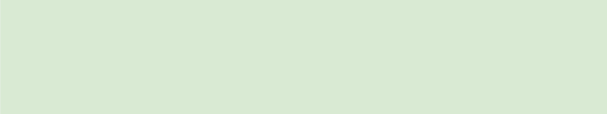

Em construção
Em construção Em construção Em construção Em construção Em construção Em construção
Em construção
Em construção Em construção Em construção Em construção Em construção Em construção
Em construção
Em construção Em construção Em construção Em construção Em construção Em construção
Em construção
Em construção Em construção Em construção Em construção Em construção Em construção
Olá! Sou Thaís Nicole, engenheira e apaixonada por ciência de dados. Adoro explorar insights e revelar histórias ocultas nos dados, enxergando o mundo de forma sistêmica, onde cada detalhe importa.
Desenvolvimento de scripts e automação de tarefas.
Implementação de algoritmos de aprendizado de máquina para análise de dados.
Criação de dashboards e relatórios interativos com ferramentas como Power BI.
Gerenciamento e consulta a bancos de dados relacionais.
Sou residente em Engenharia de Software pela UFPE, com MBA em Engenharia de Software pela USP e bacharelado em Engenharia Mecânica pela UFPE. Com mais de três anos de experiência em gerenciamento de projetos, desenvolvi habilidades em desenvolvimento de produtos, otimização de processos e liderança de equipes. Atualmente, estou focado em aprofundar minha expertise em ciência de dados, utilizando Python, SQL e bibliotecas de machine learning.